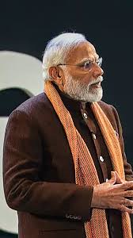

THE PRIME MINISTER

Campaigns led by Modi Poverty in a farmer's life has been reduced to a great extent, thanks to the helping hands offered by our Prime Minister. Not only poor farmers, but he also helped reduce the poverty level from other sectors. He has eliminated the problem of water from India. Carrying the work to the next stage after Mr. Atal Vihari Vajpayee, Modi showed a great interest in the construction of infrastructure in India.
A generous and recognized campaign, "Make in India," was started by Mr. Narendra Modi. In this campaign, he conveyed the message to manufacturers that it is best to use Indian materials and products rather than depending on foreign goods. This way, our money will circulate within the country and it will help to reduce the inflation rate.
To end with, India has benefitted like never before under the leadership of Honourable Prime Minister Mr Narendra Modi. He has taken all the initiatives to make our country great and appreciable on the global standard.
Recent Endeavours of Narendra Modi In April 2020, Narendra Modi, an Indian politician and the current Prime Minister of India, overtook US President Donald Trump as the most popular world leader on Facebook. He has ranked first among all international leaders in the fight against the Coronavirus (COVID-19) pandemic, ensuring the safety and security of Indian citizens and offering all essential help to other countries.
In the aftermath of the pandemic, Prime Minister Narendra Modi decided to create a distinct Ministry of AYUSH, now selling medications to other countries.
Article 370, which granted special status to the former state of Jammu and Kashmir (J&K), was repealed under his strong leadership. Narendra Modi's leadership has been hailed by world leaders, international agencies, philanthropists, Nobel laureates, and many more.
Modiji earned the UN's top environmental accolade, the Champion of the Earth, in October 2018. On February 22, 2019, Narendra Damodardas Modi was awarded the prestigious Seoul Peace Prize 2018 to contribute to international collaboration and global economic prosperity. On April 12, 2019, he was also awarded the Order of St. Andrew, Russia's highest civilian decoration.
For his second term as Prime Minister of India, he ran on "Nationalism" in the 2019 general election and earned a large mandate.
Benchmarks of Modi’s Success After being elected to his second term as Gujarat's chief minister in 2002, he focused on the state's economic development and an attractive location for business people and industrialists.
In 2007, during his third term as CM, he increased agricultural growth rates, provided power to all villages, and bolstered the state's rapid development.
When he was Gujarat's chief minister, he launched groundwater conservation initiatives with the government’s help. This aided in the cultivation of Bt cotton by providing irrigation through tube wells.
Gujarat's governor, Narendra Modi, has provided power to every village. In addition, he modified the state's power distribution system by dividing agricultural and rural electricity.
Narendra Modi introduced honouring the Interworldwidenational Day of Yoga during his speech to the United Nations General Assembly. Thanks to his efforts, the International Day of Yoga is observed on June 21st all over the world.
Modi's book 'Aankh Ka Dhanya Che' has a compilation of his poems. The Madame Tussauds Wax Museum in London has a wax statue of Modi. In 2015, he was placed sixth on Fortune magazine's list of the world's most powerful leaders.
Narendra Modi was designated one of the top 30 most influential individuals on the Internet and one of Forbes' top ten most powerful people on the planet. He earned the United Nation’s highest environmental honor, 'Champions of the Earth,' in October 2018. He is the first Indian to get the 2018 Seoul Peace Prize.
He is a beacon of hope for billions of Indians and one of the most popular leaders who focus on development. Even our Prime Minister Narendra Modi's slogan, "Main Bhi Chowkidar," emphasizes the dignity of labor and seeks the support of the working people. He used this term because he believes he, too, is standing steadfast and doing his job as the nation's "chowkidar." He further stated that any Indian fighting against corruption, filth, social evils, and other issues for India's prosperity is a 'Chowkidar.' The slogan 'Main Bhi chowkidar' became famous as a result of this.
"Hard Work Never Brings Fatigue.
SHREE NARENDRA DAMODARDAS MODI_
Early Life
Prime Minister Narendra Modi was born in a lower-middle-class family at Vadnagar, Gujarat. He had a keen interest in politics since the early days of his childhood. After completing his higher education in his hometown, he decided to join Rashtriya Swayamsevak Sangh. This is popularly known as RSS in our country. During his earlier ages of life, he was headstrong and was not that keen on the concept of marriage. Since then, he has dedicated his entire life to his motherland. At the age of 17, Narendra Modi decided to travel around the country and gain knowledge while helping others. Mr Modi is a great admirer of the ideologies of Swami Vivekananda.
He always emphasizes, "Coming age is the age of knowledge. However, rich, poor, or powerful a country be, if they want to move ahead, only knowledge can lead them to that path."
The Life Story
Narendra Modi is a motivation for every Indian. He became the prime minister of India after breaking the bar of a poverty-stricken tea-selling boy. He has seamlessly become a development-oriented leader. Narendra Damodardas Modi was born on 17th September 1950. He is a prominent figure who showed us success is not related to the caste system. It doesn’t matter from where a person belongs or what his or her background is.
Narendra Modi is considered a master strategist and becomes a ray of hope for billions of lives in India. He is one of the leaders who stay focused on developments. With him, the dignity of labor is respected, and the working class is supported greatly. Narendra Modi is the glorious son of Late Damodardas Mulchand Modi and Heeraben Damodardas Modi. None of the prime ministers had taken office when their mother was alive. It is Mr. Modi who created history.
Eradicating Black Money from Our Country
Dealing with strong hands, Narendra Modi has a significant role in eradicating black money from India. He demonetized the currency notes of 500 and 1000 rupees and later introduced a complete new semblance of Indian currency notes. This helped a lot in eliminating corruption, terrorism, and counterfeit currency from India. Our 15th Prime Minister is considered to be a stern administrator and leader with strict and protective discipline. These can be seen through his works, policies, speeches, and initiation of various schemes. He maintains a great image when it comes to rising from humble beginnings and moving to become the Prime Minister of India.
Campaigns led by Modi Poverty in a farmer's life has been reduced to a great extent, thanks to the helping hands offered by our Prime Minister. Not only poor farmers, but he also helped reduce the poverty level from other sectors. He has eliminated the problem of water from India. Carrying the work to the next stage after Mr. Atal Vihari Vajpayee, Modi showed a great interest in the construction of infrastructure in India.
A generous and recognized campaign, "Make in India," was started by Mr. Narendra Modi. In this campaign, he conveyed the message to manufacturers that it is best to use Indian materials and products rather than depending on foreign goods. This way, our money will circulate within the country and it will help to reduce the inflation rate.
To end with, India has benefitted like never before under the leadership of Honourable Prime Minister Mr Narendra Modi. He has taken all the initiatives to make our country great and appreciable on the global standard.
Recent Endeavours of Narendra Modi In April 2020, Narendra Modi, an Indian politician and the current Prime Minister of India, overtook US President Donald Trump as the most popular world leader on Facebook. He has ranked first among all international leaders in the fight against the Coronavirus (COVID-19) pandemic, ensuring the safety and security of Indian citizens and offering all essential help to other countries.
In the aftermath of the pandemic, Prime Minister Narendra Modi decided to create a distinct Ministry of AYUSH, now selling medications to other countries.
Article 370, which granted special status to the former state of Jammu and Kashmir (J&K), was repealed under his strong leadership. Narendra Modi's leadership has been hailed by world leaders, international agencies, philanthropists, Nobel laureates, and many more.
Modiji earned the UN's top environmental accolade, the Champion of the Earth, in October 2018. On February 22, 2019, Narendra Damodardas Modi was awarded the prestigious Seoul Peace Prize 2018 to contribute to international collaboration and global economic prosperity. On April 12, 2019, he was also awarded the Order of St. Andrew, Russia's highest civilian decoration.
For his second term as Prime Minister of India, he ran on "Nationalism" in the 2019 general election and earned a large mandate.
Benchmarks of Modi’s Success After being elected to his second term as Gujarat's chief minister in 2002, he focused on the state's economic development and an attractive location for business people and industrialists.
In 2007, during his third term as CM, he increased agricultural growth rates, provided power to all villages, and bolstered the state's rapid development.
When he was Gujarat's chief minister, he launched groundwater conservation initiatives with the government’s help. This aided in the cultivation of Bt cotton by providing irrigation through tube wells.
Gujarat's governor, Narendra Modi, has provided power to every village. In addition, he modified the state's power distribution system by dividing agricultural and rural electricity.
Narendra Modi introduced honouring the Interworldwidenational Day of Yoga during his speech to the United Nations General Assembly. Thanks to his efforts, the International Day of Yoga is observed on June 21st all over the world.
Modi's book 'Aankh Ka Dhanya Che' has a compilation of his poems. The Madame Tussauds Wax Museum in London has a wax statue of Modi. In 2015, he was placed sixth on Fortune magazine's list of the world's most powerful leaders.
Narendra Modi was designated one of the top 30 most influential individuals on the Internet and one of Forbes' top ten most powerful people on the planet. He earned the United Nation’s highest environmental honor, 'Champions of the Earth,' in October 2018. He is the first Indian to get the 2018 Seoul Peace Prize.
He is a beacon of hope for billions of Indians and one of the most popular leaders who focus on development. Even our Prime Minister Narendra Modi's slogan, "Main Bhi Chowkidar," emphasizes the dignity of labor and seeks the support of the working people. He used this term because he believes he, too, is standing steadfast and doing his job as the nation's "chowkidar." He further stated that any Indian fighting against corruption, filth, social evils, and other issues for India's prosperity is a 'Chowkidar.' The slogan 'Main Bhi chowkidar' became famous as a result of this.